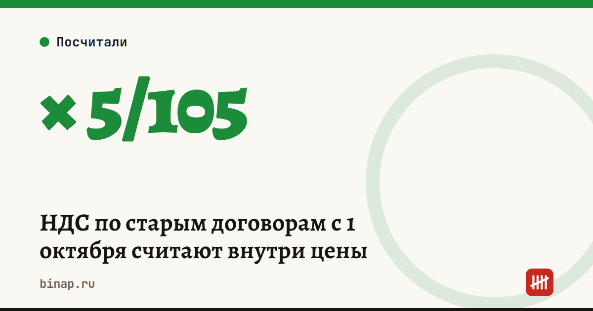

НДС по старым договорам с 1 октября считают внутри цены

С 1 октября 2026 года действует новый порядок НДС по длящимся договорам (закон от 04.08.2026 № 293-ФЗ). Если вы стали плательщиком НДС уже после подписания договора, налог можно не добавлять к цене, а выделить из неё расчётным методом. Для этого нужны три условия сразу:
- обязанность платить НДС появилась из-за изменения налогового законодательства уже после заключения договора;
- покупатель не может принять этот налог к вычету;
- цену договора не меняли, и в договоре нет условий о том, как её менять в такой ситуации.
Счёт-фактуру покупателю в этом случае не выставляют (п. 3 ст. 168 НК в новой редакции). Если хотя бы одно условие не выполнено, действует общий порядок: НДС сверх цены и счёт-фактура.
Кого касается: прежде всего ИП и компаний на УСН, которые в 2026 году стали плательщиками НДС из-за снижения порога до 20 млн ₽, а договоры заключали раньше, по цене «без НДС».
Как посчитать на примере. Договор на 120 000 ₽ в месяц, ставка НДС 5%. Если начислять сверху, покупатель должен бы заплатить 126 000 ₽. По новому правилу НДС сидит внутри: 120 000 × 5/105 ≈ 5 714 ₽ налога, выручка без НДС — 114 286 ₽.
- Выручка продавца без НДС
- НДС
По новому правилу цена для покупателя не меняется, а НДС выделяется из неё: 120 000 × 5/105.
Таблица с данными
| Вариант | Выручка без НДС | НДС | Платит покупатель |
|---|---|---|---|
| НДС сверху | 120 000 ₽ | 6 000 ₽ | 126 000 ₽ |
| НДС внутри | 114 286 ₽ | 5 714 ₽ | 120 000 ₽ |
Что сделать:
- Выпишите договоры, заключённые до того, как вы стали плательщиком НДС, и цену по которым не меняли.
- Отметьте, у каких покупателей нет права на вычет: физлица, упрощенцы без НДС, самозанятые.
- По таким договорам счёт-фактуру не выставляйте, а с бухгалтером сверьте, как отразить эти суммы в декларации за IV квартал.
- В новых договорах сразу пропишите, как меняется цена, если у вас появится НДС: тогда спорить с покупателем не придётся.